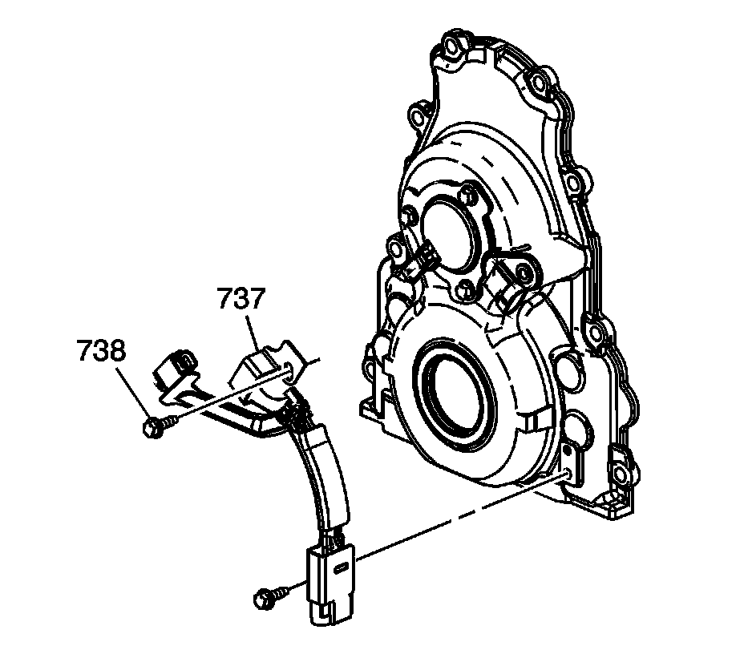
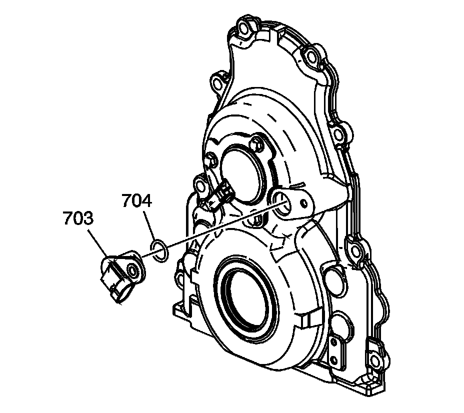

Camshaft Position Sensor: Service and Repair
CAMSHAFT POSITION SENSOR REPLACEMENT (WITH RPO CODES LY6/L76/L92)
REMOVAL PROCEDURE
IMPORTANT: Clean the area around the camshaft position (CMP) sensor before removal in order to prevent debris from entering the engine.

1. Raise and support the vehicle. Refer to Vehicle Lifting.
2. Disconnect the engine wiring harness electrical connector (1) from the CMP sensor wire harness.

3. Remove the 3 CMP sensor wire harness bolts (738).
4. Disconnect the CMP sensor wire harness electrical connectors from the CMP sensor and the CMP actuator magnet.
5. Remove the CMP sensor wire harness (737).

6. Remove the CMP sensor (703) and O-ring seal (704).
INSTALLATION PROCEDURE
1. Inspect the CMP O-ring seal for cuts or damage. If the seal is not cut or damaged, it may be used again.
2. Lubricate the O-ring seal with clean engine oil.
3. Install the O-ring seal (704) onto the sensor.
4. Instal the CMP sensor (703) to the front cover.
5. Install the CMP sensor wire harness (737).
6. Connect the CMP sensor wire harness electrical connectors to the CMP sensor and the CMP actuator magnet.
7. NOTE: Refer to Fastener Notice.
Install the 3 CMP sensor wire harness bolts (738).
Tighten the bolts to 12 N.m (106 lb in).
8. Connect the engine wiring harness electrical connector (1) to the CMP sensor wire harness.
9. Lower the vehicle.